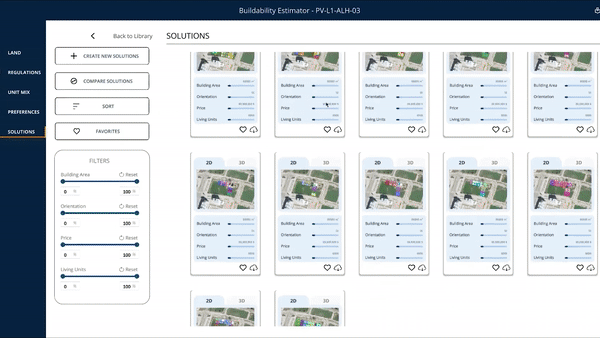
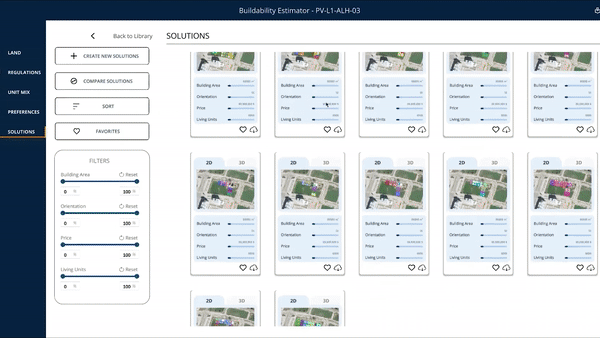

Project Overview
Buildability Estimator was the second tool I worked on during my time at Lurtis Rules S.L., where I was primarily responsible for the front-end development in Unity3D. My work focused on UI/UX programming, designing user interactions, integrating the tool with Spain’s cadastral API to retrieve accurate land data, and automating the generation and instantiation of 3D buildings based on the analyzed plots.
Throughout this project, I faced several complex challenges. One of the main ones was handling map visualization in Unity3D using Mapbox, which required detecting real-world coordinates and converting them into a format compatible with the Spanish cadastral system. I also had to understand and process the data formats provided by the cadastral API, ensuring seamless integration. Additionally, I worked with asynchronous API calls in C#, optimizing the tool’s performance while rendering real-time geospatial data retrieved from the cadastral service.
By the time I started working on this tool, my UI development skills in Unity were already solid, which allowed me to adapt quickly to the changing needs of the project. The interface was initially designed in Figma, giving me valuable insight into UI/UX design workflows before moving into actual development. This experience reinforced the importance of establishing a strong visual and functional foundation before beginning implementation.
Beyond UI and interaction development, I also had the opportunity to work with libraries for generating Word and PDF documents, enabling the automatic creation of reports and budget estimates based on the designs produced by the software. Additionally, I deepened my knowledge of C# and LINQ, while also exploring the differences between .NET Framework, .NET Core, and .NET Standard. During development, we encountered compatibility issues between C++ and Unity, particularly with libraries like CGAL, which required troubleshooting and problem-solving to integrate successfully.
This project also expanded my expertise in NuGet package management and introduced me to new Unity features, such as package handling and Assembly Definition files, which helped streamline the development process. Overall, working on Buildability Estimator significantly enhanced my technical skills, particularly in asynchronous programming, API integration, and UI/UX development within Unity3D.
 
